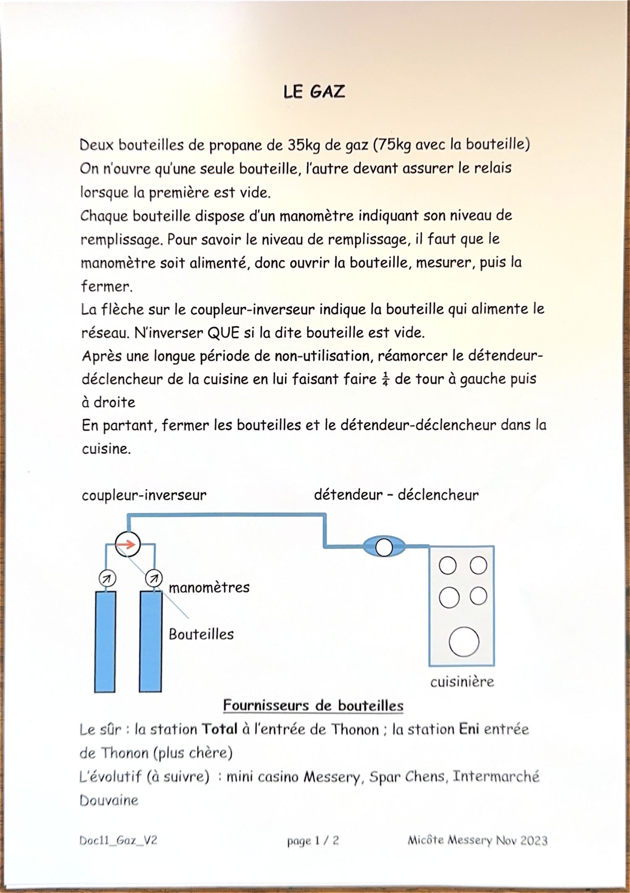
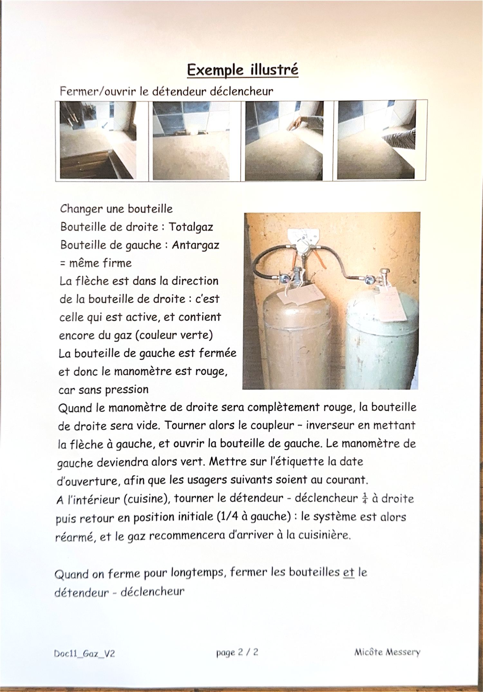

En partant : fermez les deux bouteilles et le détendeur-déclencheur situé dans la cuisine.
Principe Comment c'est installé
Deux bouteilles de propane de 35 kg de gaz (75 kg avec la bouteille). Une seule est ouverte à la fois, l'autre assure le relais quand la première est vide.
- Coupleur-
inverseur - Sa flèche indique la bouteille qui alimente le réseau. On ne l'inverse que si cette bouteille est vide.
- Manomètres
- Un par bouteille. Vert = il reste du gaz, rouge = vide (ou bouteille fermée, donc sans pression).
- Détendeur-
déclencheur - Dans la cuisine, en amont de la cuisinière. C'est lui qu'on réarme.

Mesure Vérifier le niveau d'une bouteille
Le manomètre n'indique quelque chose que s'il est sous pression.
- Ouvrez la bouteille.
- Lisez le manomètre.
- Refermez-la aussitôt s'il ne s'agit pas de la bouteille active.
Relais Changer de bouteille
À faire quand le manomètre de la bouteille active est complètement rouge.
- Tournez le coupleur-inverseur pour mettre la flèche vers l'autre bouteille.
- Ouvrez cette bouteille : son manomètre doit passer au vert.
- Inscrivez la date d'ouverture sur l'étiquette, pour que les usagers suivants sachent où l'on en est.
- Dans la cuisine, tournez le détendeur-déclencheur d'un quart de tour à droite, puis ramenez-le en position initiale (un quart de tour à gauche).
- Le système est réarmé : le gaz arrive de nouveau à la cuisinière.

Reprise Après une longue absence
Si la maison est restée inutilisée, le détendeur-déclencheur de la cuisine doit être réamorcé : faites-lui faire un quart de tour à gauche, puis à droite.
Achat Où trouver des bouteilles
- ✅ Le plus sûr : la station Total à l'entrée de Thonon.
- 💰 La station Eni, entrée de Thonon également — plus chère.
- 🔎 À confirmer : mini Casino à Messery, Spar à Chens, Intermarché à Douvaine.
Les deux bouteilles en place sont de marques différentes (Totalgaz et Antargaz) mais de la même firme : elles sont interchangeables sur l'installation.